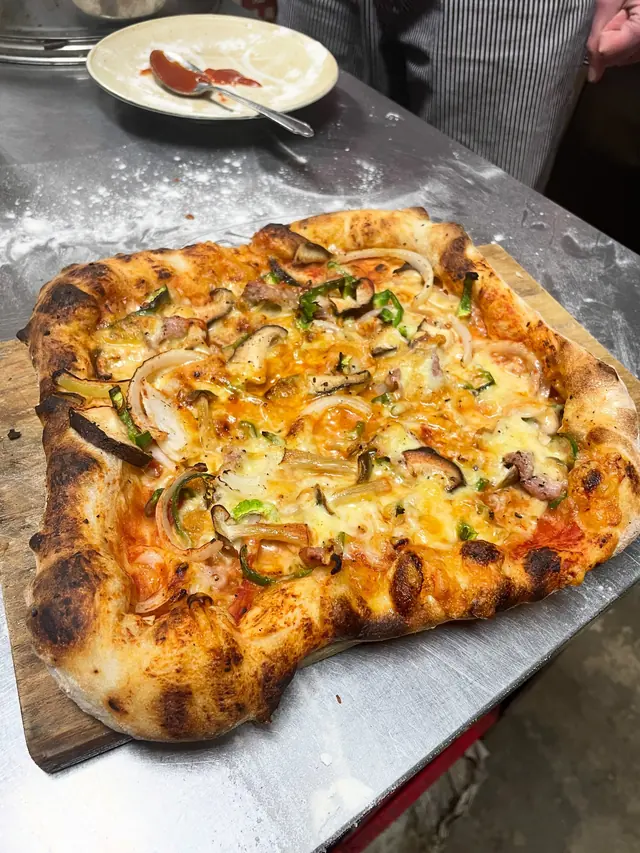
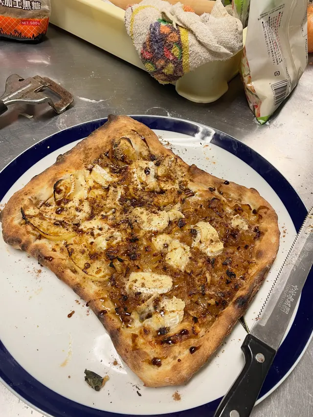
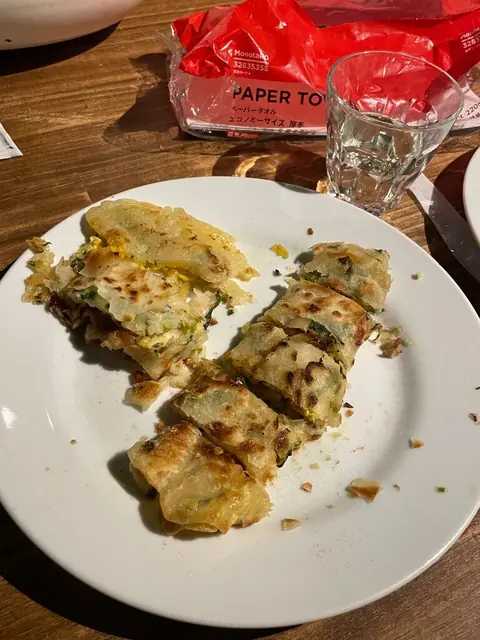
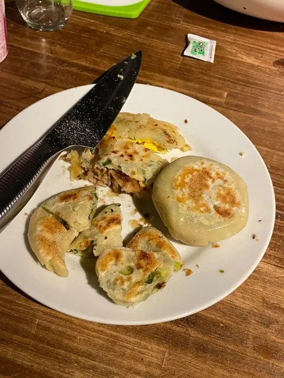
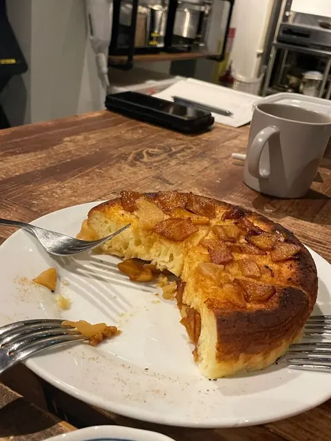
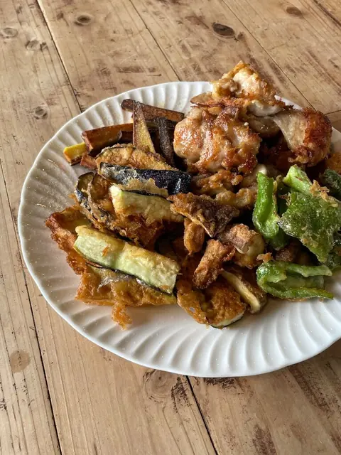
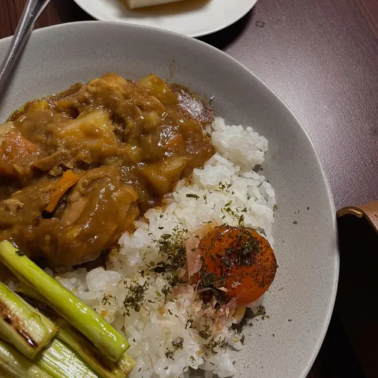

芽吹き中。
mengyahh.com
作ったもの、感想、写真。







嘉義県に住んでいます。新しい暮らしに、まだ慣れている途中です。2025年6月〜2026年6月は日本でワーキングホリデー。いま、その記録を一生懸命書き足しています。
フリーランス歴5年の、ちょっと変わった働き方をしています。最終的な成果物だけを見ると、私の専門が何なのかわかりにくくて、なんでも屋に見えるかもしれません。私の仕事は、コンサルタントであり、伴走者であり、実行役でもあります。まず必要なことを理解して、本当の困りごとを見つけてから、何をどう作るかを話し合い、「分析→企画→制作」をまるごとお引き受けします。